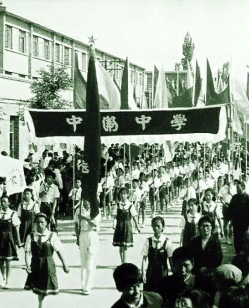
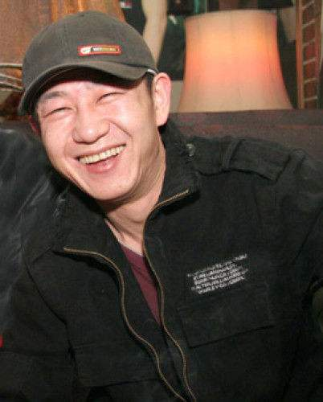
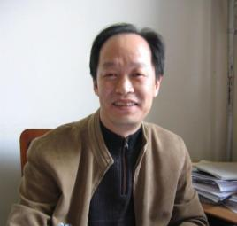
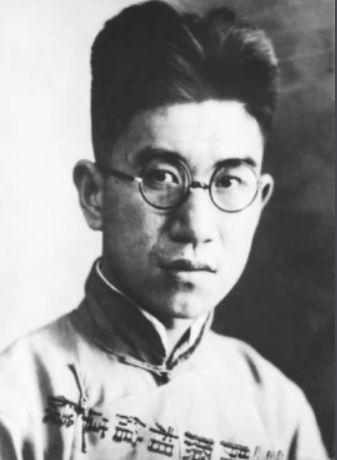

刘佩黻
刘佩黻(1878—1944)，字瑞甫，清末民初县文化界名流，善诗文，精医脉，乐善好施，热心公益事业，是卫地德高望众的缙绅。
他先后担任县应理书院院长、县劝学所所长，直接从事教育行政管理。民国年(1922)，他倡议将中卫县第一区高级小学与县模范初级小学合并，成立中卫县高级小学校，修业年限初小为四年，高小为三年，春季始业，使该校成为本县第一所学制完善、管理规范的学校。
《详细》

赵牧阳
赵牧阳，1967年出生于宁夏中卫，中国内地摇滚歌手，鼓手。曾先后加入过鲍家街43号、超载乐队、腾格尔与苍狼乐队、呼吸乐队等摇滚乐队，窦唯的《黑梦》、许巍的《在别处》及张楚的《姐姐》等诸多经典作品中都记录下了他震撼人心的鼓技。
作为歌手，牧阳在1991年发行的首张专辑《牧阳流浪》被传唱至大江南北，让他在被称作"摇滚鼓王"的同时亦被称为"中国流行民谣第一人"。《详细》

麦天和
麦天和，《经济与法》主编，1963年5月生人，祖籍宁夏中卫景庄。
麦天和种过两年庄稼，读过四年中文，教过六年语文，办过两年报纸，做电视时间最长，先后十多年了。出过三本长篇文学作品，拍过八部电视系列片。

张保和
张保和，祖籍山西太原，生于陕西西安，长在宁夏中卫市。中国曲艺家协会理事、中国武警文工团艺术指导、军旅艺术家。2008年创作了抗震民谣《中国雄起》。留住真情，保住特色，守住信念，护住青山。——张保和
张子华
张子华（1914～1942），革命烈士。原名王绪祥，乳名宿祥，曾化名王少髯、黄汉等。宁夏中宁县恩和乡沙滩村人。张子华自幼有良好的家庭教育，又按部就班接受了正规的现代学校教育。
